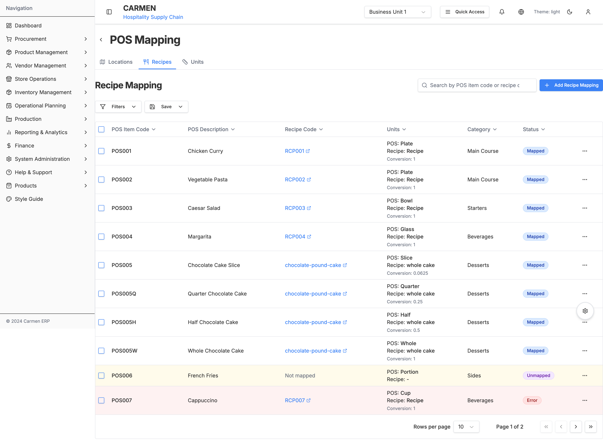
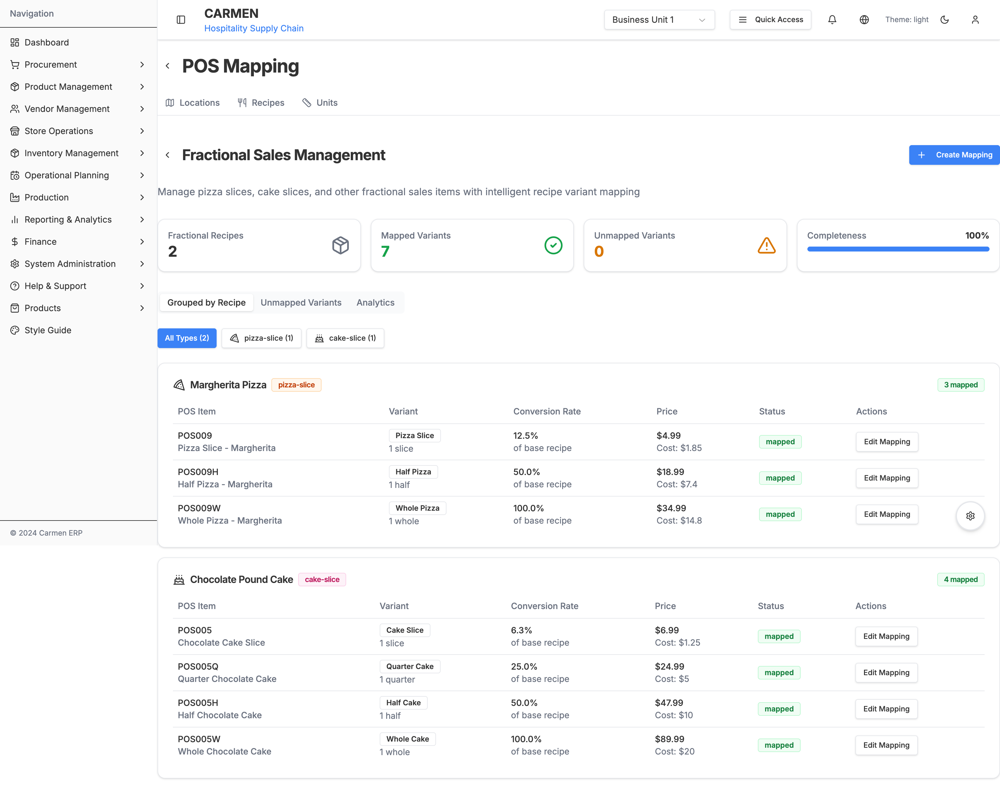
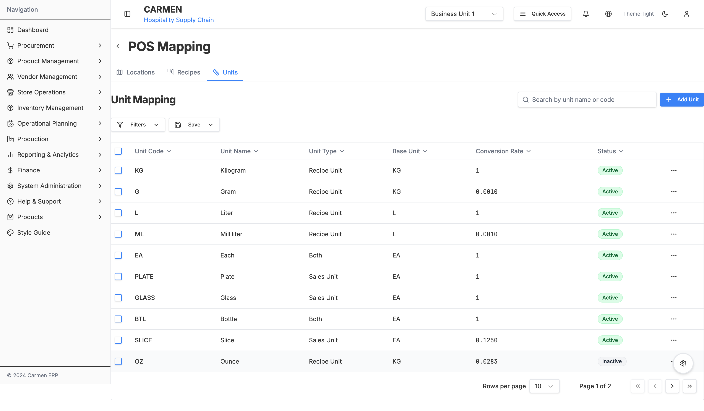
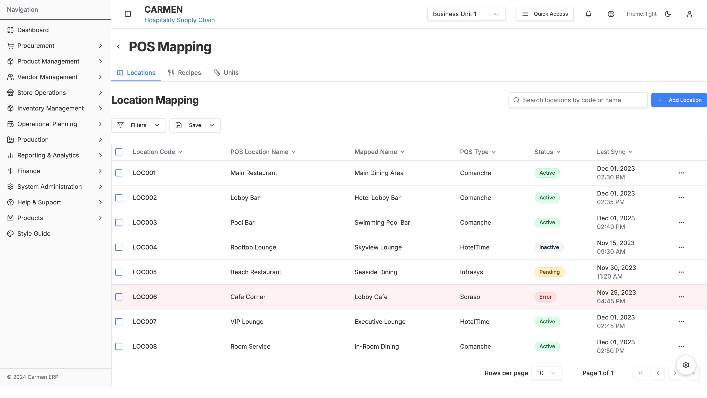

POS Mapping Subsystem
Submodule: Mapping
Route: /system-administration/system-integrations/pos/mapping
Status: ✅ Production
Parent Module: POS Integration
Overview
The Mapping subsystem provides comprehensive data mapping capabilities between POS systems and the Carmen ERP system. It enables recipe mapping, fractional sales management, unit conversions, and location mapping to ensure accurate inventory tracking and cost analysis.
Screenshots

Recipe Mapping - Map POS items to system recipes with unit conversion

Fractional Variants - Manage pizza slices, cake portions, and multi-yield recipes

Unit Mapping - Configure unit conversions between POS and ERP

Location Mapping - Map POS locations to system locations
Module Structure
1. Recipe Mapping
Route: /system-administration/system-integrations/pos/mapping/recipes
Purpose: Map POS items to ERP recipes with unit conversion tracking
Features:
- POS item to recipe mapping
- Unit conversion configuration
- Status tracking (Mapped, Unmapped, Error)
- Category-based filtering
- Location-based filtering
- Full-text search
- Bulk operations
- Row-level actions (Edit, Delete, History, Test)
Data Structure:
interface RecipeMapping {
id: string
posItemCode: string // POS system item code
posDescription: string // POS item description
recipeCode: string // ERP recipe code
recipeName: string // ERP recipe name
posUnit: string // POS unit of measure
recipeUnit: string // ERP unit of measure
conversionRate: number // Conversion factor
category: string // Menu category
location?: string // Optional location filter
status: 'mapped' | 'unmapped' | 'error'
lastUpdated: Date
createdBy: string
}
Columns Displayed:
- POS Item Code: Unique identifier from POS
- POS Description: Item name in POS
- Recipe Code: Link to recipe detail (clickable with external link icon)
- Units:
- POS Unit
- Recipe Unit
- Conversion Rate (if applicable)
- Category: Menu category classification
- Status: Visual badge (Mapped/Unmapped/Error)
- Actions: Row menu with operations
Status Indicators:
- Mapped (Green): Successfully mapped and operational
- Unmapped (Amber): Requires mapping configuration
- Error (Red): Mapping conflict or validation error
User Workflows:
Map New Item:
- Click "Add Recipe Mapping"
- Enter POS Item Code
- Search and select Recipe
- Configure unit conversion
- Save mapping
Review Unmapped Items:
- Filter by Status: Unmapped
- Click on item to edit
- Complete mapping configuration
- Test and save
Bulk Map Similar Items:
- Select multiple items (checkbox)
- Click "Bulk Map"
- Apply common pattern
- Review and confirm
2. Fractional Variants Mapping
Route: /system-administration/system-integrations/pos/mapping/recipes/fractional-variants
Purpose: Manage partial recipe sales for items sold in multiple portion sizes
Key Concept: Fractional variants allow a single base recipe to be sold in multiple portions (e.g., pizza by slice or whole, cake by slice/quarter/half/whole) with automatic inventory calculation.
Features:
- Base recipe selection
- Variant configuration:
- Slice
- Quarter
- Half
- Whole
- Custom portions
- Automatic yield calculation
- Individual POS code assignment
- Variant-specific pricing
- Cost calculation per portion
- Inventory deduction automation
Data Structure:
interface FractionalVariant {
id: string
baseRecipeCode: string // Base recipe reference
baseRecipeName: string // Base recipe name
posCode: string // Unique POS code for this variant
posDescription: string // Variant description
variantType: 'slice' | 'quarter' | 'half' | 'whole' | 'custom'
portionSize: string // Display format (e.g., "1 slice")
yieldPercentage: number // % of base recipe (e.g., 12.5 for 1/8)
sellingPrice: number // Retail price for this variant
calculatedCost: number // Base recipe cost × yield %
status: 'mapped' | 'unmapped'
lastUpdated: Date
}
Example Configuration:
Pizza (Margherita):
- Base Recipe: 1 whole pizza (8 slices)
- Variants:
- Slice: POS001 = 12.5% (1/8), $3.99, Cost: $1.25
- Whole: POS001W = 100% (8/8), $28.99, Cost: $10.00
Chocolate Cake:
- Base Recipe: 1 whole cake (16 slices)
- Variants:
- Slice: POS005 = 6.25% (1/16), $6.99, Cost: $1.25
- Quarter: POS005Q = 25% (4/16), $24.99, Cost: $5.00
- Half: POS005H = 50% (8/16), $47.99, Cost: $10.00
- Whole: POS005W = 100% (16/16), $89.99, Cost: $20.00
Business Rules:
- Each variant must have unique POS code
- Yield percentage cannot exceed 100%
- All variants reference the same base recipe
- Cost = Base Recipe Cost × (Yield Percentage / 100)
- Inventory deduction = Base Recipe Quantity × (Yield Percentage / 100)
User Workflows:
Create Fractional Recipe:
- Navigate to Fractional Variants
- Click "Create Fractional Recipe"
- Select base recipe
- Define variants (add row for each portion size)
- Set POS codes and prices
- Save configuration
Edit Variant Pricing:
- Click "Edit Mapping" for specific variant
- Update selling price
- Cost recalculates automatically
- Save changes
Add New Variant:
- Select base recipe
- Click "Add Variant"
- Define portion size and yield %
- Assign POS code
- Set price
- Save
Technical Implementation:
When a fractional variant is sold:
- POS sends transaction with variant POS code
- System looks up fractional variant mapping
- Retrieves base recipe and yield percentage
- Calculates inventory deduction:
Base Recipe Qty × Yield % - Deducts calculated amount from inventory
- Records cost:
Base Recipe Cost × Yield % - Transaction marked as completed
3. Unit Mapping
Route: /system-administration/system-integrations/pos/mapping/units
Purpose: Configure unit of measure conversions between POS and ERP systems
Features:
- POS unit to ERP unit mapping
- Conversion factor configuration
- Unit type classification:
- Sales Unit (used in POS)
- Recipe Unit (used in ERP recipes)
- Both (dual purpose)
- Active/Inactive status
- Search and filtering
Data Structure:
interface UnitMapping {
id: string
posUnitCode: string // POS unit code
posUnitName: string // POS unit name
unitType: 'sales' | 'recipe' | 'both'
erpUnitCode: string // ERP unit code
conversionFactor: number // Multiplier for conversion
status: 'active' | 'inactive'
lastUpdated: Date
}
Common Unit Mappings:
| POS Unit | POS Name | Type | ERP Unit | Conversion | Example |
|---|---|---|---|---|---|
| PCS | Piece | Sales Unit | EA | 1:1 | 1 piece = 1 each |
| GLASS | Glass | Sales Unit | EA | 1:1 | 1 glass = 1 each |
| BTL | Bottle | Both | EA | 1:1 | 1 bottle = 1 each |
| SLICE | Slice | Sales Unit | EA | 0.125:1 | 1 slice = 0.125 whole (1/8) |
| OZ | Ounce | Recipe Unit | KG | 0.0283:1 | 1 oz = 0.0283 kg |
| LB | Pound | Recipe Unit | KG | 0.4536:1 | 1 lb = 0.4536 kg |
| PORTION | Portion | Sales Unit | EA | 1:1 | 1 portion = 1 each |
Conversion Formula:
ERP Quantity = POS Quantity × Conversion Factor
Example:
- POS sells 8 OZ
- Conversion: 1 OZ = 0.0283 KG
- ERP deducts: 8 × 0.0283 = 0.2264 KG
User Workflows:
Add Unit Mapping:
- Click "Add Unit Mapping"
- Enter POS unit code and name
- Select unit type
- Select ERP unit
- Enter conversion factor
- Save mapping
Edit Conversion Factor:
- Search for unit
- Click action menu → Edit
- Update conversion factor
- Save changes
4. Location Mapping
Route: /system-administration/system-integrations/pos/mapping/locations
Purpose: Map POS outlet locations to ERP system locations
Features:
- Multi-outlet support
- Multi-POS system support (Comanche, HotelTime, Soraso)
- Location status tracking
- Last sync timestamp
- Location-specific configuration
Data Structure:
interface LocationMapping {
id: string
posLocationCode: string // POS system location code
posLocationName: string // POS location name
erpLocationCode: string // ERP location code
erpLocationName: string // ERP location name
posSystem: 'comanche' | 'hoteltime' | 'soraso' | 'custom'
status: 'active' | 'unmapped' | 'error'
lastSyncDate: Date
lastSyncTime: string
configuration?: LocationConfig
}
interface LocationConfig {
autoSync: boolean
syncFrequency: number // minutes
stockOutApprovalRequired: boolean
notificationRecipients: string[]
}
Example Mappings:
| POS Code | POS Location | ERP Location | POS System | Status | Last Sync |
|---|---|---|---|---|---|
| LOC001 | Main Restaurant | Main Restaurant | Comanche | Active | Today 02:15 PM |
| LOC002 | Lobby Lounge | Lobby Cafe | HotelTime | Active | Today 02:10 PM |
| LOC003 | Pool Bar | Poolside Bar | Comanche | Active | Today 02:12 PM |
| LOC004 | Coffee Shop | Cafe Corner | Soraso | Active | Today 02:05 PM |
User Workflows:
Map New Location:
- Click "Add Location Mapping"
- Enter POS location code
- Select POS system
- Select ERP location
- Configure sync settings
- Save mapping
Review Sync Status:
- View location list
- Check Last Sync timestamp
- Investigate errors (red status)
- Trigger manual sync if needed
Shared Components
MappingHeader
Consistent header component across all mapping pages
Features:
- Back navigation to POS Dashboard
- Page title
- Search bar
- Add button (context-specific)
- Breadcrumb navigation
FilterBar
Advanced filtering component
Features:
- Multiple filter groups
- Applied filters display with chips
- Clear all filters
- Save filter preset
- Load saved presets
Filter Types:
- Status: Multiple selection (Mapped, Unmapped, Error)
- Category: Multiple selection (menu categories)
- Location: Multiple selection (outlet locations)
DataTable
Reusable table component with TanStack Table
Features:
- Sorting (all columns)
- Pagination (10/20/50/100 per page)
- Row selection (checkbox)
- Expandable rows (optional)
- Custom cell renderers
- Row actions menu
- Responsive design
StatusBadge
Visual status indicator
Variants:
- Mapped: Green badge with checkmark
- Unmapped: Amber badge with alert icon
- Error: Red badge with error icon
- Active: Blue badge with check icon
- Inactive: Gray badge
RowActions
Dropdown menu for row-level actions
Common Actions:
- Edit: Open edit dialog
- Delete: Confirm and delete
- History: View change history
- Test: Test mapping configuration
- Duplicate: Create copy
Business Rules
Recipe Mapping Rules
- POS Item Code must be unique within location
- One POS item can only map to one recipe
- Conversion rate must be > 0
- Category must exist in system
- Status automatically updates based on validation
Fractional Variant Rules
- Each variant must have unique POS code
- Total yield percentage can exceed 100% (multiple sales)
- Minimum yield percentage: 0.01% (0.0001)
- Base recipe must exist and be active
- At least one variant required per base recipe
- Variant POS codes cannot conflict with regular recipe mappings
Unit Mapping Rules
- POS unit code must be unique
- Conversion factor must be > 0
- ERP unit must exist in system
- Inactive units cannot be used in new mappings
- Changing conversion factor affects future transactions only
Location Mapping Rules
- POS location code must be unique per POS system
- ERP location must exist and be active
- One POS location maps to one ERP location
- Multiple POS locations can map to same ERP location (consolidation)
- Cannot delete location with active mappings
Integration Points
Recipe Management
- Recipe lookup and validation
- Recipe cost calculation
- Recipe ingredient list
Inventory Management
- Stock deduction calculations
- Location-specific inventory
- Par level checking
Product Management
- Unit of measure validation
- Product category alignment
Reporting
- Mapping status reports
- Unmapped items alerts
- Mapping coverage metrics
Future Enhancements
- Auto-mapping AI: Machine learning to suggest mappings based on name similarity
- Bulk import: Excel/CSV import for mass mapping
- Mapping templates: Pre-configured templates for common POS systems
- Visual mapping editor: Drag-and-drop interface for complex mappings
- Mapping analytics: Coverage reports, success rates, error trends
- Historical mapping: Track mapping changes over time with rollback capability
Related Documentation
Last Updated: October 10, 2025
Version: 1.0
Status: Production